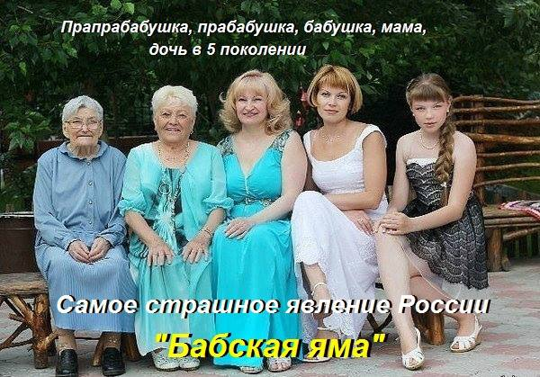

Определения, термины
Кто такой Алень?
"Алень" - терпила в отношениях с бабами. Отличается идеализацией отношений между полами, внушаемостью, наивной верой в женскую порядочность, недостатком самоуважения, готовностью поступаться своими интересами.
Важный момент: из-за повышенной внушаемости, он управляем, легко поддаётся манипуляциям со стороны баб.
А манипуляции, как правило, основаны на эксплуатации привитой установки, что "мужчина должен" и ложных понятий благородства и самоотвержения. "Алень" старается соответствовать тем стереотипам поведения, которые ему навязыват бабы в своих интересах. В общем существо условно мужского пола, неспособное самостоятельно мыслить, руководствоваться разумом и логикой, заменяя их чужими, преимущественно бабскими, догматами и принимающее решения в ущерб себе, искренне полагая, что они единственно верные
Основные признаки Аленя:
- Заработанные деньги приносятся жене и она ими распоряжается (добытчик ресурсов не для себя).
- Слово жены решающее (от покупок до времяпровождения).
- Готов за жену броситься на любого обидчика, рискуя своим здоровьем, даже если она сама виновата.
- Жена на первом месте (др. родственники, включая отца, мать на десятом, друзья там же).
- Имеет нездоровую зависимость от жены (любовь, розовые сопли и т.п.).
- Низкая самооценка.
Лошара и "настоящий мужчина" в одном флаконе
Алень - это мужчина, существующий в ложной системе координат. Он аленит, и ему внушают, что это круто, и это подпитывает его самооценку. Он убежден, что он крут и привык к этому. Если его болевой порог еще не достигнут хитрой бабой - он и не рыпается. Пусть его имеют с особым цинизмом, зато это не очень больно и вроде как почетно.
Попал он в стойло постепенно. Его заводили туда мягко, ласково, поощряя вкусной пи...тинкой. Гайки закручивали постепенно. Мозг выедали нежно. Он этого процесса не ощутил, не осознал, не понял. Он к нему был подготовлен с детства. Теперь ему говорят, что он говно. Объективно это так. И может быть он даже понимает это в глубине души. Но.
- Это полностью разрушает его мир.
- Это полностью разрушает его самооценку.
- Это требует принятия решений и решительных действий.
- Это требует материальных и прочих потерь.
- Это требует признания себя лохом и чмом.
- Это требует выжечь в себе любофь каленым железом.
- Он не имеет ни малейшего представления, как жить без стойла.
ЭТО ОЧЕНЬ БОЛЬНО И ОЧЕНЬ СТРАШНО.Поэтому он брыкается и пытается изо всех сил натянуть пелотку обратно на уши.
И поэтому он покидает стойло только после того, как его мир по факту разрушен, ему уже очень больно и его самооценка нулевая. Когда ему уже нечего терять. То есть после измены и развода.
Почему мужик стал аленем?
Потому, что он не имел ни малейшего представления о реальных мужчинах, бабах, отношениях и браке. Его так воспитали.
Слепым и в иллюзорном представлении о мире. Не понимающим даже того, кто он и зачем. Соответственно у него не было шанса сориентировться и сделать осознанные движения. Вылупился: "Ктоя? Где я? Куда я куда?" Тут его за рога и в стойло.
Он и пикнуть не успел. Помочь можно только тому, кто помогает себе сам(с)
Убежденный алень это корм для самок. Отработанный материал. Земля пухом. Наплевать и забыть. Не париться.
Аленями определенно становятся.
- Человек рождается и воспитывается в матриархальном окружении.
- Влюбляется, не понимая что с ним происходит. Принимает это за тот светлый миг, когда все в жизни само становится на свои места.
- Свадьба. Долгое приготовление. Много гостей. Поздравления и куча потраченых денег.
- Совместная жизнь. Здесь у людей в зависимости от степени аленизма и стервозности супруги появляются первые беспокойства.
- Рождение ребенка. Супруга чувствует что алень уже привязан по крепче. Тут еще чаще появляются синдромы СДС. Углубляется аленизнм. Искреннее недоумение - "После рождения ребенка её как подменили".
- Развивается крах всей системы. Сквозь мнимое чувство долга, навязанной вины, "любовь" проступают части неприятной реальности. Идет вынос мозга оленя, измены, откровенные унижения. На этом этапе создаются темы "Можно ли сохранить брак..." или "Живем вместе только ради детей..."
- Развод. На аленя направляется шквал говна. Обвинения, наглый отъем имущества, несправедливые требования по обязательствам. И тут мы видим темы: "Ехали, ехали и приехали...", "Развод, санчас, посоветуйте как быть..." А так же вся мерзота и безобразие из войны полов. "Подстава со стороны бывшей жены...", "Не дает видеть детей..."
- Если остались какие то завязки и с детьми вопрос не решен. Продолжается активная война полов. Со всеми сопутствующими ужасами.
Т.е. аленизм имеет конкретные стадии развития. И человек соскакивает на каком то этапе к новому образу жизни или в могилу. В чем то он похож и на алкоголизм. С начала человек пьет и это на время улучшает его жизнь. Кто бы что не говорил, а алкоголь это по началу дает. Потом нарастают проблемы. Больной уже не замечает, как расстается с нормальной жизнью. Так и в аленизме есть приятная составляющая - наслаждения женщиной. Но есть и все то о чем тут так много написано.
Alex Vice
https: //www. masculist. ru/ blogs /post -2660. html
Бабья яма
Бабья яма ( по сути, это однополая семья состоящая из двух женщинок, в ЕС и США,- лесбиянок) это то, во что превращается вариант "мамина дочка" спустя десятилетия. Главная характеристика такой семьи — передаваемая из поколение в поколение женская доминантность и восприятие мужчины как приложения к женщине.
От одного поколения женщин к другому передается неумение и нежелание понимать мужчин и строить с ним нормальные отношения. Девочка в такой семье изначально ориентирована на доминирование по отношению к мужчине под контролем своей мамы. В результате такого воспитания женской доминантности, мужчина в "бабьей яме" — явление сугубо временное, эпизодическое. Он появляется на короткое время от свадьбы до рождения ребенка, затем следует развод, с традиционным для России проживанием ребенка с матерью. Иногда зачатие происходит и от совершенно постороннего человека (вариант "рожу для себя"). Если рождена девочка, то ей уже уготовано продолжить семейную "традицию" существования матери-одиночки в окружении матери и бабушки. Мальчик же, воспитанный исключительно женщинами, вырастает лишенным воли, к половозрелости уже преисполнен бабскими стереотипами, что делает практическим невозможным созданием им полноценной семьи, в свою очередь. Бабья яма — это гравитационная черная дыра общества матриархального вырождения.
Я знавал такую семью: бабушка, мама, дочка. Девушка весьма пренебрежительно отзывается о своем отце, с которым развелась мама. Все поступки девушки так или иначе согласовывались с мамой, часто было ощущение, что она повторяет чужую речь, понятно, чью. Признаюсь, по молодости чуть не стал женихом в этом доме. Благодарю собственную маму, которая с должной проницательностью и женской мудростью предостерегла меня: "В доме одни женщины?! Нет, что ты, девочка не умеет понимать и уважать мужчин". Девушка спустя несколько лет все-таки вышла замуж, уже через полгода я услышал заученные жалобы на мужа. Парень был приезжий, молодая семья поселилась в одной из квартир "бабьей ямы" под недремлющим оком тещи и неослабевающим потоком материнских советов доченьке о том, как правильно надо строить отношения с мужем. Семья распалась не просуществовав и года, но на свет родился ребенок — девочка. Итак, четыре поколения женщин в одном доме! Бедное дитя, что за судьба уготована тебе!
Есть прекрасный пример подобного матриархального вырождения на протяжении нескольких поколений: фильм "Ребро Адама" режиссёра Вячеслава Криштофовича, 1990 год, в главной роли Инна Чурикова. Обязательно посмотрите, вы не пожалеете потраченного времени.
Материальной основой "бабьей ямы" являются квартиры, унаследованные от погибших и причастных к появлению потомства "бабьей ямы" мужчин, алименты, вымогательства при разводе, деление т. н. "совместно нажитого" имущества. Собственные доходы женщин "бабьей ямы" обычно невелики. Полупаразитическое существование матриархального семейного суррогата поддерживается и стимулируется узаконенным грабежом мужчин и в меньшей степени (в России) государственными программами поддержки матерей-одиночек, "материнскими капиталами" и проч.
"На работе была история. Пришла молоденькая симпатичная девочка на должность секретаря. Закрутила роман с топ-менеджером, вышла за него замуж, родила и через год развелась. Там мама очень постаралась. Теперь получает 40 тыс рублей в месяц алиментов. Что интересно: ее бабушка воспитывала ее маму без мужа, ее мама воспитывала ее саму тоже без мужа. Обе исправно получали алименты. Теперь доченька продолжает семейную традицию. Возможно, ее дочка пойдет тем же путем. Если еще и квартиру можно будет отсуживать - таким женщинам вообще будет просто зашибись, как хорошо."
На Западе социологи давно отметили пугающий рост числа "бабьих ям". Вот выдержки из статьи "Потомственные матери-одиночки угрожают обществу?":
"Согласно статистическим данным, более половины женщин, воспитанных матерями-одиночками, сами становятся таковыми. Еще десять лет назад этот показатель равнялся 44 процентам, а по данным 2008 года он достиг 53 процентов. Это серьезные цифры — особенно если учесть тот факт, что такие чисто женские семьи в современном обществе существуют достаточно комфортно. Бабушка приглядывает за ребенком, а мать и взрослая дочь зарабатывают на вполне достойное существование."
"Так называемые расширенные женские семьи, состоящие из трех поколений, провоцируют развитие новой семейной субкультуры. Живут они небогато, как правило, на социальные пособия, — объясняет Денч. — В работе они не слишком заинтересованы, потому что могут прокормиться и без нее. Общество, в котором объем льгот для матерей-одиночек настолько высок, что они могут не работать, находится на прямом пути к разобщению. Нельзя ожидать стремления к семейной жизни от людей, которых материально поощряют отказываться от брака».
Обилие «расширенных женских семей» имеет и другие побочные эффекты. Научно доказано, что дети матерей-одиночек более слабы физически, обладают низким иммунитетом и хуже учатся в школе, потенциально склонны к асоциальному поведению, рискуют получить проблемы с властями и полицией, а также с высокой степенью вероятности станут безработными и будут воспитывать ребенка без супруга."
Семейная законодательная практика нашего общества, увы, часто копируются со стран Запада и носит всю ту же пугающую направленность стимуляции роста числа матерей-одиночек и поощрения самовоспроизводства "бабьих ям".
https: // true -man. ru/ ?page_ id=156

Куколд
Куколд (англ. Cuckold) — фетишистская сексуальная практика, в которой один из супругов является соучастником сексуальной «неверности» своего супруга. Основным сторонником фантазии почти всегда является мужчина: именно он убеждает свою жену участвовать в его фантазии, хотя некоторые куколды могут предпочитать, чтобы жена сама инициировала эту ситуацию. Фетиш-фантазия не подразумевает, что куколда унижают против его воли
История термина
Слово куколд происходит от английского слова cuckold, которое означает обманутого женой мужа. В западных традициях куколдов иногда называют «носящими рога куколда» или просто «носящими рога». Это намёк на брачные привычки оленей, которые утрачивают своих супругов, когда их побеждает другой самец. Это слово часто подразумевает, что муж обманут; что он не знает о неверности своей жены и может не знать до тех пор, пока не появится или не вырастет ребёнок, который явно не от него (как в случае с птицами-кукушками). Оно происходит от слова «кук (англ. cuck)» (слабый или раболепный человек) и от «кукушка» (англ. cuckoo), имея в виду её привычку откладывать свои яйца в гнёзда других птиц. Ассоциация распространена в средневековом фольклоре, литературе и иконографии .
Флаг, использованный во время Английской революции Горацио Кэри в связи с печально известными семейными проблемами графа Эссекса
Первое употребление этого слова в английском языке встречается примерно в 1250 году в средневековой поэме-диспуте «Сова и соловей». Это слово было охарактеризовано как чересчур прямолинейный термин в «Падении принцев» Джона Лидгейта, c. 1440. Данное слово часто использует Шекспир, описывая обманутых мужей, а также как часть оскорбительных тирад.
Женский эквивалент куколда — кукквин (cuckquean) впервые появляется в английской литературе в 1562 году, будучи образованным путём добавления женского суффикса к слову кук (cuck).
Аббревиатура от слова куколд, термин кук (cuck) использовался альтернативными правыми, чтобы атаковать мужественность противника. Первоначально он был нацелен на других консерваторов, которых альтернативные правые считали неэффективными
Научная оценка
Психология рассматривает фетишизм куколда как вариант мазохизма, когда куколд получает удовольствие от унижения. Во фрейдистском анализе фетишизм рогоносца — это эротизация страхов неверности и неудач в мужской конкуренции за продолжение рода и привязанности женщин.
https: //ru.m. wikipedia .org/wiki/
Что такое бабораб?
Бабораб - безвольный, лишённый чувства собственного достоинства мужчина (благодаря всему: воспитанию, комплексу вменённой общемужской вины, прессингу общественного мнения (мужчина должен)) без самостоятельного мышления, все аспекты жизни которого полностью подчинены женщине и который искренне считает, что это единственно возможное состояние существования мужчины.
В России усилиями баб выведена особая порода мужчин – законченных генетических рабов. Никакой солидарности! Ни единого проблеска ума! Третье поколение на четвереньках! Этим и гордятся! В жизни они руководствуются идеологической триадой: «Лизать жопу начальству, пресмыкаться перед бабами и втаптывать друг друга в дерьмо!» Хватает на все случаи жизни! Когда я слышу высказывания, типа «Вот народ поднимется и как даст!» - я смеюсь! Это сделают бабогосударственные рабы? Они же песок – между ними никаких взаимосвязей. Они вообще в принципе не способны к объеденению. Только ползать перед бабами. А бабы за них решают всё. Настоящий скот. Их искусственно вывели. Путём отбора самых послушных и глупых.
Главная особенность бабогосударственных рабов - позиция "ничего не вижу, ничего не слышу". например, ему говорят, женила баба вон того залетом, а ему только 21, а он "нууу, не меня же!". или вылетел вон тот на улицу после развода, - "нууу, я еще и не женат, гыыы!". отсутствие превентивных ударов, короче. идиоты не понимают, что воевать на своей территории завтра это в 100 раз хуже, чем воевать сегодня на территории чужой.
БАБОРАБЫ, КАК ОБРАЗЕЦ КЛИНИЧЕСКОЙ ТУПОСТИ.
1. Возьмём скотину. Если её избивать и кормить помоями, то скотина будет протестовать отказом от пищи и мычанием (блеянием). Корове не придёт в голову, что после избиений она станет некоей «супер коровой». Баран не будет думать, что от изекуций и выволочек он станет каким-то «настоящим бараном». Не то баборабы! Пинки и узаконенную дискриминацию они считают как бы неким инструментом, который делает их «настоящими му..ками»
2. У животных сильный имеет лучшие куски и особые повышенные права. Баборабы считают себя сильными. А значит, по их понятиям, они должны быть последними в очереди, сдавать свои деньги, чтобы ими пользовались другие, ну ещё оказывать мелкие услуги – открыть дверь, подать пальто, с улыбкой сносить пощёчины – так баборабы демонстрируют свою силу.
3. Поставьте перед бараном, свиньёй, козлом в порядке научного эксперимента миску фекалий. Никто из них это есть не будет. Не то баборабы! Надо просто внушить баборабам, что фекалии – это не фекалии! А просто особый вид варенья! Которое, кстати, потребляет «всё прогрессивное человечество»! И баборабов от миски трактором не оттащишь! Будет слышны лишь чавканье и глухие выкрики: «Только пидарасы не едят варенье!» «Ты что не мужик что ли?» «А я его прямо так и спросил: «Ты что варенье не любишь?» — А ему и деваться некуда! Гыгыгы!»
4. Большинство животных имеют простейшие навыки кооперации и взаимопомощи. Например, одна крыса может опускать хвост в глубокую банку со сметаной, а другая крыса сметану слизывать. Потом меняться местами. Баборабы никогда не помогают друг другу. У них всё завязано на баб и начальство. Вообще, вся информация, которая поступает снизу или откуда то сбоку баборабами не воспринимается в принципе. Мыслительный процесс, как таковой, у баборабов отсутствует. Его им заменяют приказы, распоряжения и свистки идущие сверху т.е. от баб и начальства.
5. Известно, что животные не в состоянии понять, что в зеркале отражаются они сами. Хотя вот обезьяны уже это понимают. Так же и баборабы прочитав эту заметку себя не узнают, а только будут приставать с тупыми вопросами: «А кто такие баборабы?» «А где они живут?» «А что значит само слово «бабо-рабы»? Может не «рабы», а «бобы»?
6. Ни одна скотина не откажется от улучщения своих условий. Только баборабы, когда заходит речь об улучшении их жизни имеют приобретённый рефлекс: становиться на четвереньки и обкидывать какашками тех, кто хочет повысить их правовой статус. Ну и кто они после этого? Животные? Люди? Баборабы?
БАБОРАБЫ В РФ ОФИЦИАЛЬНО ПРИРАВНЕНЫ К ЖИВОТНЫМ.
Из чего я исхожу? Из того простого факта, что человек должен иметь юридические права – права человека. В противном случае, даже биологическая принадлежность к хомо сапиенсам ещё ни о чём не говорит. Известно, что римляне не считали своих рабов за людей, при них не стыдно было, например, ходит обнажённым. Римские рабы не имели прав и считались «живым орудием». Египетские рабы так же не имели прав человека. Египтяне называли их «мёртвый-живой». Фактически рабы были живыми существами, но юридически они были «мертвы».
Возьмём российских баборабов. Допустим, какая то женщина забеременела от бабораба. По российским законам она вправе по единоличному желанию самостоятельно умертвить ребёнка, не ставя бабораба даже в известность. При этом, не имеет значения состоит бабораб в, так называемом, матриархальном браке или нет. Никакого согласия отца ребёнка на аборт в медучреждении российского скотомогильника не требуется. По закону бабораба даже не обязаны ставить в известность, относительно того, что его ребёнка умертвили. И кто после этого бабораб? Животное? Ну где то так! Или может просто биологический объект?
Кстати, в клиниках РФ 20 % абортов совершаются вообще без ведома отца. Инфа из википедии – гуглите! Т.е. каждый пятый российский бабораб вообще не в курсе, что его ребёнка того!… оприходовали на лечебные кремы и мази!
Второй риторический вопрос: ну кто после этого вся совокупность российских баборабов в целом? Сборище даунов? Иногда из их стада промеж мычания доносится: «Счёт 2:1 в нашу пользу!» «П**ы!» «А я заначку в трусы спрятал!» «Гыгыгыгы!» Как не пыжится оно, всё равно оно – гавно!
Два политических обозревателя обсуждают проблемы разрядки международной напряжённости – Два дауна-жополиза брешут языками, стараясь услужить начальству. Идёт программа «Давай поженимся!» — Клоуны-мазохисты демонстрируют обряд ритуального самоопускания. Идёт заседание Госдумы – Стая павианов изображает Римский Сенат. Баборабы выступают за права женщин – Так и надо понимать: Животные выступают за права человека!
https: //www. masculist. ru/ blogs/ post- 140.html
Блядь
[Блядь, ж. публичная женщина, проститутка; вообще распутная женщина. Бляду́н —уна́ м. развратник, распутный мужчина. Бляду́нья ж. ниже обыкновенной бляди, лахудра, плёха. Бля́дский, блядовско́й, свойственный, присущий бляди. Блядовство́ ср. любодеяние, распутная жизнь. Блядова́ть, предаваться блуду, любодействовать. Ак. Бля́дская трава́ раст. Aspidium filix mas. Бля́дские оре́хи, Pinus cambra, сиб. Бля́дская строка́, тип. (нем. Hurenzeile), неполная, коротенькая строчка, не уместившаяся внизу страницы или столбца и помещаемая поэтому вверху следующей страницы или следующего столбца (прием, избегаемый в типографской практике). Ак. Ср. курва, блёжник].
https: //ru. m.wikisource. org/
Шлюха
Шлюха,-женщина, ведущая безнравственный, распутный образ жизни; потаскуха.
профура, передним местом думает, блядушка, шлюшка, подстилка, шваль, блудница, девка, лахудра, стервоза, развратница, шаболда, курва, блядюга, шмара, хипесница, падла, потаскунья, путана, шалава, проблядь, блядь, поблядушка, лярва, блядища, стерва, потаскуха, путанка, трепушка, проститутка, мара, гулящая, потаскушка, распутница, мессалина, продажная сущ1. проститутка, публичная женщина, женщина легкого поведения, уличная женщина, продажная женщина, гулящая, девка, потаскуха2. развратница, распутница, блудница, мессалина, потаскунья, потаскухаженщина, занимающаяся развратом
https :// glosum. ru/
РСП
Разведёнка с прицепом (РСП) — разведённая женщина с ребёнком (детьми). Ключевым сочетанием особенностей данного вида самок человека, определяющим тактико-технические характеристики, модель и специфику поведения, является как минимум один похеренный брак, закончившийся разводом, и наличие ребёнка. Сам по себе термин имел хождение среди 3,5 юзеров форума «антибабы», пока некто Дмитрий Селезнев в 2011 г. не описал ТТХ сабжа в мануале «6 причин не жениться на РСП», и всё заверте… С тех пор тема сабжа в акцепте этих 6 причин ежегодно поднимается на различных интернет-ресурсах, вызывая гарантированные стостраничные срачи на форумах и так же гарантировано выводя в топ постов в этих ваших жежешечках… Сам же типаж стал резко распространен с развалом СССР и понеслась…
Причины появления
Для начала стоит напомнить, что половина свежесозданных счастливых ячеек общества в этой стране так же счастливо распадается в среднем через 10 лет. Из этой же половины еще 40% — это разводы с детьми. Раньше было 60%, но это только из-за меньшего количества разводов без детей. Причины, по которым это случается, достаточно прозаичны и однообразны. Поскольку людскую тупость, безответственность и непредусмотрительность еще никто не отменял, то мы имеем то, что имеем: кучу разведенных особей обоих полов.
По мнению овуляшек, смысл всей жизни женщины — выйти замуж и родить ребенка. Эту цель с самого детства ей ненавязчиво навязывает общество в лице старших женщин. После рождения женщина зачастую становится овуляшкой и теряет интерес ко всему, кроме своего дитяти. Хорошо это или плохо, читайте в соответствующей статье.
Рождение дитяти, даже хилого и больного, возведено ею в ранг героического подвига, за совершение которого весь норот должен восхищаться им. Но окружающим глубоко похуй — никто не спешит отливать имя героини в граните и даровать пожизненную путёвку в Египет рай обетованный. Зато самка получает забот полон рот, проблемы со здоровьем и складки жира. Вместо радости материнства приходит депрессия, да такая, что хоть волком вой. А виновник торжества, как ей кажется, и в ус не дует, уткнувшись в ящик и не замечая её ежедневных «подвигов». Лютая, бешеная злоба овладевает ею, и она начинает отрываться на муже: бесконечные истерики и капризы, ебля мозгов с утроенной силой и жесточайший прессинг.
Первые 1-3 года жизни дитяти — самое тяжёлое время для молодой семьи, и большая часть разведенных мамаш с детьми оформляется именно в этот период. Ушедшая в декрет самка вместе с ребенком мертвым грузом повисает на шее мужчины. Сказанная в порыве нежности фраза «давай заведём ребёнка» оборачивается кромешным адом: в жизни мужика ни друзей, ни отдыха, ни развлечений, ни беспорядочной ебли (да и порядочной тоже), а только новое божество — Его Величество Ребёнок, во благо и ради которого теперь делается абсолютно всё. Божество же только и делает, что орёт, жрёт, срёт, норовит куда-нибудь залезть и покалечиться, и вообще — постоянно требует новых жертв. А ночами рядом противно храпит натуральный бегемот, в которого превратилась некогда привлекательная принцесса. Нередко, последним штрихом к картине становится финансовый аспект: мужчине приходится вкалывать как папе Карло, чтобы прокормить и обеспечить семью. И уж совсем мрачно, если новоиспеченный отец вовсе не собирался становиться таковым, а просто хотел потрахаться всласть.
Далее события развиваются по следующим типовым сценариям:
самец не выдерживает и приходит к выводу: да ебись оно всё конём. Начинает бухать, гулять, предаваться разврату, заводит любовницу. После серии скандалов, битья посуды (а иногда и морды), или же уличив его в измене, жена выставляет его вещи в подъезд либо берёт ребёнка за шкирку и сваливает к маме;
самка впадает в затяжную депрессию, осознавая потерю лучших лет жизни, товарного вида и отсутствие света в конце туннеля. Виновником, естественно, назначается неудачник-муж, втянувший её в эту аферу. «Не уделял внимания, не чувствовала себя женщиной» — стандартная женская версия произошедшего. Окончательно убедив саму себя, что этот козёл в трениках на продавленном диване — вовсе не герой её романа, а ошибка молодости, она начинает втихаря искать настоящего мужчину. Заводит анкету на знакомствах, находит какого-то мудака со спермотоксикозом или просто заприметив голодного самца в ближайшем окружении, который сыплет комплиментами, говорит правильные и красивые слова, льёт бальзам на её кровоточащую душу. И влюбляется в него без памяти. Однако, затем обычно следует одно из следующих (нужное подчеркнуть):
получив заветный доступ к пелотке и поебав мозги, возлюбленный внезапно врубает заднюю и сливается. Муж, узнав о предательстве, яростно фалломорфирует и разводится с перегулявшей девочкой, а затем платит алименты и отдает половину состояния;
самка, будучи еще замужем, заприметив более выгодный для себя вариант, разводится, и начинает жить с ухажером. Новоиспеченный любовник, побывав в шкуре папочки, спонсора, жратво-добывающего завода и других неожиданных персонажей, с которого сосут деньги, силы, нервы и время, начинает понимать, что его анальное отверстие постоянно растет в диаметре. И через некоторое время (от месяца до нескольких лет) уходит подальше от истерички, оставив её одну. Таким образом, после этого брошенная душа, недолго поплакав пару минут, ищет новую неопытную жертву.
Опустим все прелести развода, в процессе которого, чтобы морально уничтожить и отжать побольше имущества, супруги обильно поливают друг друга говном, обвиняют во всех смертных грехах, и тем самым окончательно теряют человеческое достоинство.
Вот так в итоге и появляются на рынке знакомств новые юниты со старыми дырами — алиментщик и разведёнка с прицепом обыкновенная. Далее запускается цикл, и РСП из прицепа (в зависимости от наличия у оного МПХ или ЖПП) лепит будущих или алиментщика или РСП.
http: // lurkmore.to/
Подкаблучник
Подкаблучник – это муж, над которым доминирует жена. Подкаблучников-мужчин гораздо больше, чем принято считать. При упоминании слова «подкаблучник» рисуется некий образ забитого и слабого во всех отношениях мужчины, полностью порабощенного женщиной, которая гоняет его то за хлебом, то за солью.